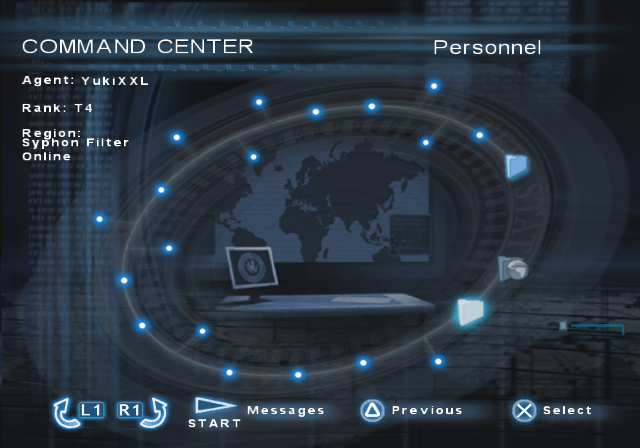
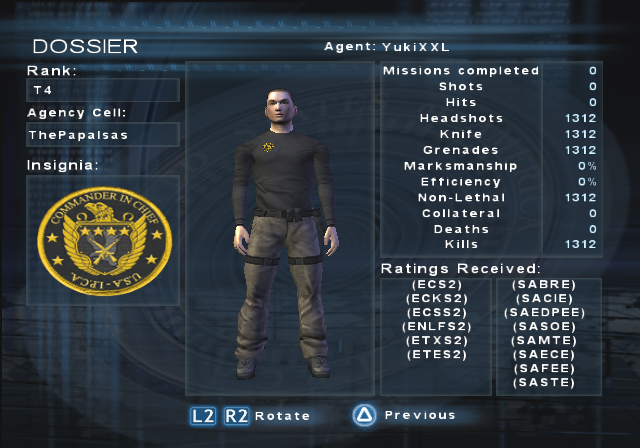
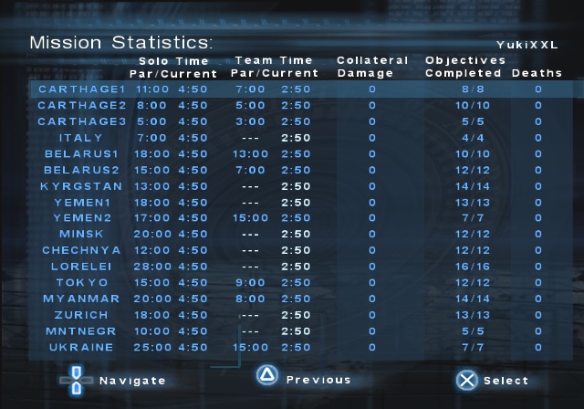
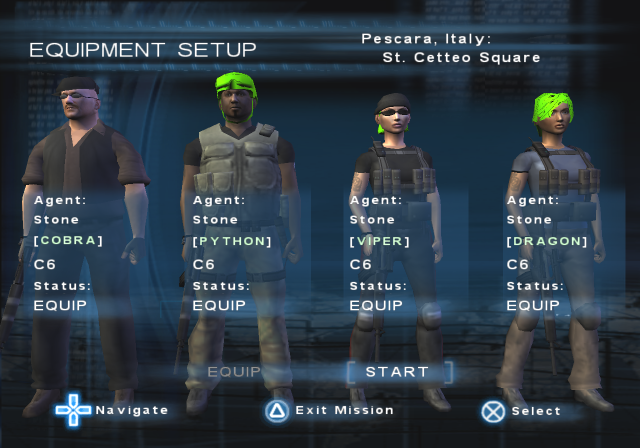
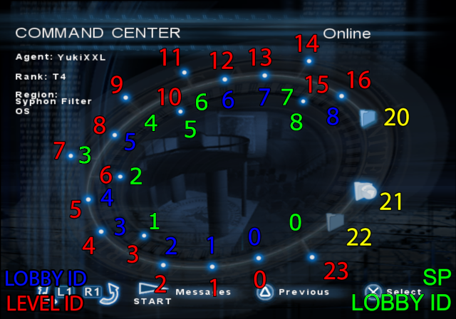
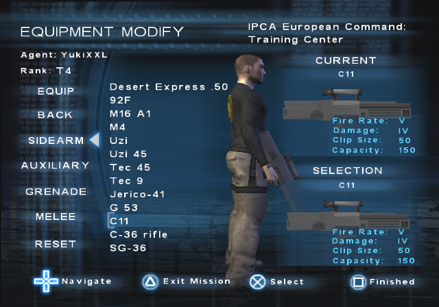
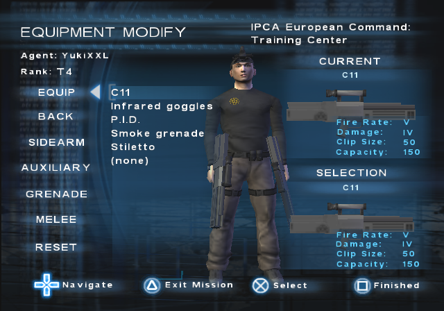

DISCLAIMER!
I am not responsible for any damage (corrupted saves, corrupted memory cards, etc.).
Codes listed here are not 100 % tested and not all codes listed here are available/ported in other PNACH's due to lack of time.
INFORMATION
In this section, I will be only explaining what cheat codes do. The codes are available in .pnach files for use with PCSX2 Emulator.
Cheat codes need to be renamed into (GAME_CRC).pnach. PCSX2 can read multiple .pnach files of the same CRC and with line added so you can have multiple .pnach's in the same game. To do it, simply add a line at the end (ex. CRC-something.pnach).
Guide for using PNACH
If you need the cheat codes in RAW format, simply do these steps:
1. Use "Find and Replace" to replace the lines "patch=1,EE," with "" (aka. NOTHING).
2. Repeat for the lines "//".
3. Replace the lines ",extended," with " " (aka. SPACEBAR).
If you want to convert the codes into format of your Cheat Device (Action Replay, Codebreaker, Gameshark, etc.), you will need the Omniconvert app.
CRC List
- Final Release (NTSC-U) = D5605611.pnach
- Final Release (PAL-E) = 27E54B37.pnach
- Final Release (NTSC-K) = 3676E74C.pnach
- Public Beta 1 (NTSC-U) = C909A32E.pnach
- Public Beta 2 (PAL-E) = 0DDA2728.pnach
- Individual Demo (NTSC-U) = D91F8506.pnach
- November Demo (NTSC-U) = BFCE8450.pnach
- Jampack Demo (Custom ISO) (NTSC-U) = 2FFA7E6F.pnach
- Jampack Winter 2003 (Mature) (NTSC-U) = 7656425F.pnach
- Prototype Review Code Mar 6 2004 (NTSC-U) - 062BC79E.pnach
100 % (T4)
Here are the codes for getting T4 with minimal effort. All that is needed is to create or load an agent and get into Command Center and save (either by quitting while in mission or modifying the agent).
Available PNACHs
Final Release (NTSC-U)
Final Release (PAL-E)
Final Release (NTSC-K)
Public Beta 1 (NTSC-U)
Public Beta 2 (PAL-E)
November Demo (NTSC-U)
Individual Demo (NTSC-U)
Jampack Demo (Custom-ISO) (NTSC-U)
Codes Explanation
(Exclusive to Individual and Jampack Demo): BOOT FRONTEND
It enables booting into main menu.
Open Levels
Gives access to all levels temporary.

Play once for all objectives
Completes all objectives.
Ratings
Makes Headshots, Knife, Grenades, Non-Lethal, Kills ratings have 1312. Reason for making it 1312 is because the Kills Rating requiers big amount of kills and there is only one function in the game's code which loops and reads all 5. The game uses dynamic memory to write where those ratings are actually stored for the agent and this way the cheat code can be also used in modded ISOs.
JAMPACK DEMO: Due to not having Dossier, the Ratings are temporary. Like "Open Levels".

All Solo Pars; All Team Pars; All Missions, No Collateral; All Missions, No Deaths
All par times are written with -10 seconds mark on lowest par (Carthage Mall). The reason for writting the same time is the same reason as for "Ratings".
Collateral and Deaths on all missions is ZERO.

All Missions Online
Ever wanted to play Training Mission with someone? Maybe Minsk and Lorelei which look like they are build for online (SPOILER: They are.)?
WARNING !
Bonus and other solo-only missions are broken due to missing scripts for multiplayer and who-knows-what. I have made my research on them and created a detailed text about all things that are broken so you might wan't to check them out first:
Solo Missions Online Info text
Available PNACHs
Final Release (NTSC-U)
Final Release (PAL-E)
Final Release (NTSC-K)
November Demo (NTSC-U)
Codes Explanation
DNAS Bypass
Bypasses DNAS check and let's you get online faster. RECOMMENDED!
All missions online
Enables all missions online (except Training).
Alternative version of the code was kept for future references. Use it if the main one doesn't work.
Lobby IDs fix
Every level (mission) has a Lobby ID. All missions that usually aren't online have Lobby ID -1. The game is only able to create a lobby with ID 9 or lower (since there are 9 online levels). This lines of codes changes the -1 IDs for the rest of the missions (except Training) to some that other levels use.
This means when some game is hosted, it will also show up in other mission lobby. Example: if Italy is hosted, the game will also show up in Carthage Warehouse but you won't be able to join it.
Own agent on Bonus missions, Enable equiping weapons on Bonus missions
Usually you aren't allowed to have your own agent on Bonus Missions or equip your own weapons but this codes make it possible so that online could be more fun.
If you skip the code, this is what you'll see for each agent idividually:

Bypass the OnlineIndextoLevel checking
The game checks twice if Lobby ID equals the Level ID that is written to be for online only. I don't know what's the reason for it but it only takes 2 lines of code for each check. All that now checks is if Level ID is equal to Level ID.
Training Mission unlocked
Great. Now you also have the Training Center unlocked.
Lobby ID fix
Fixes Lobby ID for the Training Center.
Bypass Level ID check
The game checks if selected Level ID is lower than 17 and Training ID is 23. If it fails, it doesn't allow to join the mission. Now it checks if it's lower than 24.
Training Level ID fix
The actual Training Center ID is 17. But the it's selection ID is 23. But it's also Level ID... I don't know how it works. Ask the developers. I am only here to make a check code that changes the ID from 23 to 17 once you press to join or create the mission so that it doesn't crash and so that you can see the games.
Anyway, here are the IDs references (SP Lobby IDs are IDs for usually non-available online missions):

Dual Wield Mod
Ever wanted to dual wield other weapons aside from sidearms? Dual miniguns maybe?
Available PNACHs
Final Release (NTSC-U)
Final Release (PAL-E)
Final Release (NTSC-K)
Instructions
Launch any mission. When in the Equipment Modify, go to Sidearms, quit and re-launch the mission for changes to apply.
Codes Explanation
Open weapons (NEEDED!)
Unlocks all weapons. This is needed in order to write the sidearm slot for all weapons. This includes enemies weapons so those can be also dual wielded.

Back, Auxiliary weapons save as sidearm
Soon as you go to Sidearms, it saves sidearm slot for back and auxiliary weapons.

Back = Goggles
Since all Back weapons are in sidearm and instead of leaving the option empty, you can equip goggles instead.
Auxiliary = Flashlight
Same as above but for P.I.D in Auxiliary.
Animation change for all weapons
This changes holding animation so you hold weapons as dual sidearms.
Dual Wield Ability unlocked
In case you don't have the dual wield ability unlocked. This enables it.
Show goggles and P.I.D in Equip
The Equip option doesn't usually show goggles and P.I.D but since you can equip/unequip them, now you can see if you have them equipped or not.

OLD CODES (ARCHIVED)
This codes were kept for future reference. Not used due to a bug of not being able to use P.I.D (Flashlight), Goggles, Grenades or Meele.
Dual Wield any weapon
All weapons under sidearm (Equipment Modify)
Shows all weapons (equipment) in sidearms slot.
All weapons in sidearm weapon slot
Makes all weapons be in sidearm weapon slot.